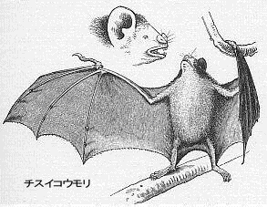

二 リオ・デ・ジャネイロ
［一八三二年四月四日より七月五日まで］
われわれが到着した数日後、わたしはフリオ岬の北、首府から百マイルちょっとの地にある自分の領地を訪ねようとしているイギリス人と懇意になった。彼はわたしをいっしょにつれていってくれるというので、その親切な申し出を喜んでうけいれた。
［四月八日］
一行は七名にのぼった。最初の道程はたいへん興味ふかいものであった。その日は恐ろしく暑気がはげしく、森をぬけていくと、大きな、美しい蝶のほか、万物はそよりとも動かなかった。その蝶はけだるそうにひらりひらりと飛びまわるのであった。プライア・グランデの蔭にある丘をこえるさいに望んだ景色はたいへん美しかった。色彩は強烈で、基調をなす色は暗青色、空と湾の静かな水とはたがいにその色彩をきそっていた。耕された多少の地域をたどりぬけた後、森にはいったが、森林はそのすみずみにまでわたる壮麗さの点で、まったくくらべられるものがなかった。
［四月九日］
われわれは日の出前に貧しい宿泊の地をたった。道は海と奥地
鹹湖の間にあるせまい砂原をつらぬいていった。シラサギやツルのような美しい漁鳥の数や、すこぶる奇抜な形をした多汁植物が景色に味をそえていた。幾らかのいじけた木が寄生植物でおおわれていて、そのうちでもラン科にぞくするある植物の美しさとかぐわしい香とはもっとも讃えていいものであった。日がのぼると、陽気はたいへん温くなり、白い砂から反射する光と熱とはすこぶるたえがたかった。われわれはマンデティバで昼飯をたべたが、木蔭にある寒暖計は二九度であった。広い鹹湖の鏡のような水面に映る森におおわれた遠い丘陵の美しい眺望は、われわれの疲労をまったく癒してくれた。
ここの
宿屋はすぐれたもので、りっぱな食事にありついた。愉快な、だがたいへんめずらしい思い出をもつものなので、それをこの種のものの雛型として、ここにのべておくことにする。そういう家は往々にして大きなもので、太いまっすぐな柱で建てられ、木の枝を編んで囲いとし、その上へ漆食が塗ってある。床がはってあることはごく稀れで、決して窓というものがつくってない。だが、屋根はたいがいかなりよく
葺いてある。いっぱんに前の方が開けていて、一種のヴェランダをなし、そのなかにテーブルと椅子がおいてある。寝台は両側にならんでいて、ここでお客は薄い
藁蒲団をしいた木の台の上で、できるだけ楽に寝る工面をする。宿屋は中庭に建っていて、中庭で馬の飼葉が与えられる。
まず到着すると、馬をはずしてトウモロコシを与えるのがわれわれの慣わしであった。ついで、
鄭重にお辞儀をして御主人様にどうぞ何か食物をお与えくださいと頼む。「はあ、何でもお気にいったものを」というのが主人の通例の答えだ。最初数回のうち、わたしはそういう善良な人間におみちびきくだすったことを、神様にむやみに感謝したのである。ところが、話がすすんでみると、たいがい問題は情けないものとなった。「何か魚をもらえますか？」――「いいえありません」――「石鹸はございますか？」――「ありません」――「パンはありますか？」――「いいえ！ ありませんよ」――「何か乾し肉はございますか？」――「いいえありません」
もし運がよければ、二時間も待ったあげく、鶏と、米と、粉を手に入れることができた。運が悪いと、われわれは晩飯の用意に自分で鶏を石で打ち殺さなければならないようなはめによく落ちこんだ。疲労と飢えのためへとへとになっているので、びくびくもので食事を早くしてもらえまいかとでもいいだそうものなら、横柄な、きわめて有難くない返答が与えられた、「できる時にはできますよ」その上何かいおうものなら、そうやかましいことをいうなら、旅をおつづけになったらいいでしょうといわれるのが落ちであった。亭主という手合いはその態度がまったく不親切で不愉快であるし、その家や使用人はむさ苦しいほど汚らしく、フォークやナイフや
匙のたりないなどは通例のことで、わたしはイギリスのどこの家や
茅屋でもこれほどまであらゆる
寛ぎの欠けているのは見いだせまいと思う。
けれども、カンポス・ノヴォスでは、なかなかのご馳走にありついた。すなわち、食事には米と鶏があり、ビスケットがあり、ブドウ酒があり、火酒があるというしだいで、晩にはコーヒーがでるし、朝飯にはコーヒー付の魚がでた。それだけにして、馬には十分の飼葉が与えられて、一人頭わずかに二シリング六ペンスしかかからなかったのである。それでもこの宿の主人は、一行の一人がなくした鞭がどうなったのか訊かれると、つっけんどんに答えた。「何でわしが知るわけがあるかい？ お前さん何でちゃんと片づけておきなさらなかった？ きっと犬でも食っちまったんでがしょう」
マンデティバを去って、われわれは湖水のたくさんあるいりくんだ
荒蕪の地をわけて進んだ。湖水のあるものには淡水貝がいたし、あるものには
鹹水貝がいた。前者については、ある湖水にモノアラガイをたくさん見いだしたが、その湖水には年に一度、どうかすると何度も海がいりこんできて、水をまったく塩辛くすると、住民がわたしに断言した。このブラジル海岸をめぐる鹹水湖の連鎖のなかに観察される鹹水および淡水産の動物について、わたしは興味ふかい多くの事実を発見した。
しばらく海岸をはなれて、われわれは再び森林へはいった。木々はすくすくと高くそびえ、ヨーロッパの木々とくらべて、その幹の白いのが著しく目についた。わたしは自分の手帖によって、「ふしぎな、美しい、花の咲く寄生植物」が、こういう壮大な場面のなかでいつもきわめて珍しいものとしてわたしの目を見はらせたのを思いだす。さきへ進んで、われわれは巨大な円錐形のアリ塚のために損われた耕地を通ったが、そのアリ塚はほとんど一二フィートの高さであった。それはフンボルトによって画かれたジォルロー〔メキシコの〕にある泥火山と寸分ちがわない様子をその平原に与えていた。われわれは暗くなった後、馬の上で十時間すごしたあげく、ヘンヘンホドへ着いた。わたしはこの全行程の間、馬のたえ得る労力の量というものにたえず驚嘆しないではいられなかった。その馬はまたわがイギリス産の馬よりもよほど早く怪我が癒えるらしかった。チスイコウモリはよく馬の肩に咬みつき、たいへんな厄介をひきおこす原因となる。傷害は血液を失ったことによって起こるよりも、鞍の圧力が後に生じさせる炎症にもとづく方が多い。その事情ぜんたいが最近イギリスで疑問とされていたので、わたしはじっさい背中で一匹（デスデモス・ドルビーニー）をつかまえるところにいあわせたというのは幸いであった。われわれはある夕方おそく、チリのコキンボ付近でキャンプしかけていたが、その時わたしの
僕は一頭の馬がひどく暴れるのに気がつき、どうしたのか見にいくと、何か妙なものがあるようなので、急いで馬の肩をおさえて見ると、チスイコウモリを捉えたのであった。朝になってみると、咬まれたところがやや脹れて血まみれになっているので、わけなく見分けられた。それから三日後に、その馬にのっていったが、何の故障もおきなかった。

［四月一三日］
三日の旅路をたどって、われわれ一行の一人の親戚にあたるマヌエル・フィジレダ氏の領地ソセーゴへ着いた。その家は質素で、形は納屋に似ていたが、そこの気候にはよく適していた。居間には金色塗りの椅子やソファーが、白壁や草ぶき屋根、ガラスのはまらない窓などと奇妙な対象をなしていた。その家は穀倉と、馬屋と、いろんな手職を教えられた黒人の働く細工場と一緒になって粗雑な四角形をなしていた。中央には大きな山に積んだコーヒーが乾されていた。これらの建物は耕地を見おろす小さな丘の上にたっていて、四方を暗いみどり色のこんもりした森の壁で囲まれていた。
この地方の主産物はコーヒーである。一株が平均して毎年二ポンドを産すると思われているが、しかしなかには一株で八ポンドも産するものがある。マンディオカまたはカサダ〔カボチャの類〕も同じく大量に栽培される。これらはすべての部分が有用だ。葉と茎は馬に食わせられるし、根はくだいてパルプにつくられるが、これを圧搾し、乾燥させて焼くと、ブラジルにおける主食物の澱粉になる。このもっとも栄養に富んだ植物の液汁が非常に有毒なのはよく知られていることだが、奇妙な事実である。数年前に一頭の牝牛がこれを飲んだ結果、この農場で死んでしまった。フィジレダ氏は前の年に一袋のソラマメと三袋の米を植えた話をしてくれた。ソラマメは八〇倍の収穫があり、米は三二〇倍の収穫があった。牧草地はりっぱな家畜の群を養い、森は猟の獣にみちみちていて、その前三日の間、毎日一頭ずつ鹿が殺されていた。この食物の豊富さは食事の上にも現れて、食卓ではテーブルは悲鳴をあげないとしても、たしかにお客の方が悲鳴をあげてしまった。というのは、めいめいすべての料理を食うものときめられていたからだ、ある日、わたしの腹では、どの料理も口をつけずにはすまさないように手ぎわよくあんばいしたつもりのところ、まったく丸のまま焼いた七面鳥と豚の焼いたのが現れて、わたしをぺしゃんこにしたことがある。
食事のさいには、ひっきりなしにはいこんでくる色とりどりの犬や小さい黒人の子供の群を部屋から追いだすのが一人の男の仕事であった。奴隷制度という観念が頭から駆逐されている間は、この単純な、家長的な生活様式には何か非常に魅力のあるものがあった。それは世界の他の部分から完全に切りはなされた、独立したものであった。誰か他国の人間が着くのが見えると、大きな鐘がつきならされ、小さな大砲が発射される。こうしてその事件は岩や森に披露されるが、それ以外にこれを聞く者はないのである。ある朝、わたしはその風景の厳かな静けさを味おうと思って、日の出の一時間前に散歩にでた。とうとうその沈黙はおびただしい黒人の群によって高い声でうたわれる朝の聖歌のために破られたが、こういうふうにして彼らの日常の仕事は始められるのであった。こういう農場では、奴隷は幸福に、満足した生活を送っているということに、わたしは疑いをもたない。土曜と日曜は、彼らは自分のために働くが、この肥沃な土地では二日の労働でまる一週間一人の男とその家族を養うに足るのである。
［四月一四日］
われわれはソセーゴを去って、マカエ河に臨む別の領地へ馬をすすめたが、これはその方面にある最後の耕地であった。その領地は長さが二マイル半、どれほどの幅があるかその持主も忘れていた。わずかにごく小さい部分だけしか開墾されていなかったが、しかしほとんどそのすべての土地が熱帯地のさまざまな産物を産し得るのであった。ブラジルの広大な地域のことを頭において考えると、耕地の割合は自然状態のまま放置されている部分にくらべてほとんど物の数にはいらない。それは近い将来に、どれほど莫大な人口をやしなうようになるだろう！
二日目の旅では道がひどくふさがれているのにぶつかったので、誰か一人の男が剣を持ってさきへ進み、
蔓草を切りはらっていかなければならなかった。森林には美しい植物がいっぱいに繁っていたが、なかでもヘゴは、さほど大きくはなかったが、そのあざやかな緑の葉と、葉の上品な湾曲した形のために、ほんとうに賞讃されていいものであった。夕方、豪雨がふったので、寒暖計は一八度であったが、わたしは非常に寒気を覚えた。雨がやむや否や、見わたすかぎり森一面におこったすばらしい蒸発の有様は、見るからに壮観であった。百フィートの高さで、丘陵は雲のように立ちのぼる白い水蒸気のなかに埋れてしまい、水蒸気は木々のいちばんこんもりとした部分、ことに渓谷からは煙の円柱のように立ちのぼった。わたしはこの現象を数回見たが、恐らくこれは日光によって前もって熱せられていた面積の大きな葉のためにひき起されるものであろう。
この領地に滞在している間、わたしは奴隷国でなければ起こり得ない恐ろしい行為の一つをすんでのことで見とどけなければならない立場に落ちこんだ。紛争と訴訟が因となって、領地の主人は男の奴隷からすべての女と子供をとりあげ、それを別々にリオで競売に付そうとしたのである。この行為は結局実現されなかったが、それはまったく同情の念からではなく、打算の念からであった。じっさいわたしは、多年の間同棲してきた三〇家族もの人間をバラバラに売ってしまおうとするのが人道に反するなどという考えが、その主人の頭に浮かんだとは信じない。けれども、人情と親切の点で彼が常々の人よりもすぐれていたのは、わたしが断言する。盲目的な利害心と利己的習慣というものには限りがないといっていいのであろう。
わたしはごくつまらない一つの逸話をあげるが、それは当時どんな残酷な話よりも強くわたしの心をうったのである。わたしは黒人とある渡船をわたったが、その黒人は並はずれて愚かであった。わたしは自分のいうことを彼に理解させようと努め、大きな声で話し、手まねをして見せたが、そうやっている間に、わたしは自分の手をその黒人の顔近くへもっていった。すると彼は恐らく、わたしが癇癪をおこして彼をなぐろうとしているのだと思ったのだろう、たちまち
怯えた様子で、半ば眼をとじ、両手をだらりとたらしてしまったのである。わたしは大きな、力強い人間が、自分の顔にむけられたと思う
拳をさけるのさえ恐れるのを見て、驚きと、不快と、恥ずかしさを覚えた自分の感情を終生わすれることができない。この人間は、訓練によって、もっとも頼りない動物の隷属以下の堕落の底までつき落されたのである。
［四月一八日］
帰途にわれわれはソセーゴで二日ついやした。その二日をわたしは森で昆虫採集に送った。木の大多数はすくすくと高くはあったが、幹周り三、四フィート以上にはおよばなかった。むろん、はるかに大きな直径のものも多少はある。マニュエル氏は当時りっぱな木の幹で七〇フィートもあるカヌーをつくっていたが、その幹はもと一一〇フィートの高さがあり、非常に大きいものであった。普通の、枝のでる木の間に生えているヤシの木が産みだす対照は、風光に熱帯地の性格を与えないではおかない。ここでは、森はハボタンジュロ――この科のうちでもっとも美しいものの一つ――によって飾られていた。これは両の手でにぎられるほど細い茎をもっていて、地上四、五〇フィートの高さで雅びやかな頭を波うたせる。自ら他の蔓草によっておおわれた木性蔓草には、乾し草の束に似た
葛の房がつりさがっていて、すこぶる奇観を呈していた。眼を頭の上の葉から眼の下の地面に移すと、シダやオジギソウの葉の非常な美しさに吸いよせられる。後者は、ある部分では、ようやく数インチの高さのある藪をなして地面をおおっていた。こういう深いオジギソウの林床を横ぎっていくと、敏感な葉柄がうなだれてつくりだされる陰影の変化によって、われわれの歩んだあとがはっきりとわかった。これらの壮麗な光景のなかでは、讃美する個々の対象をあげることは容易であるが、しかし心を充満させ、またそれを高揚させる驚異と讃美の高い感情の適切な観念をいい表わすことはまずむずかしい。
［四月一九日］
われわれはソセーゴを去って、最初の二日間、もときた道をたどった。道は概して河岸からほど遠くないぎらぎらと輝く熱砂の原を横ぎって走っていたので、これはひどく退屈であった。わたしは馬が細かい珪質砂の上に足をおろすつど、静かなさえずるような音が起こるのに気がついた。三日目にわれわれは別の線をとって、マンデレ・デ・デオスの陽気な村を通った。これはブラジルにある幹線道路の一つだが、しかしひどい不良の状態にあって、不細工な牛車以外にはどういう車輌もたどることができなかった。この旅行ぜんたいのうちにただ一つの石造の橋もわたらなかったし、木材でつくった橋は往々ひどくいたんでいて、いたんだ個所をさけて通らなければならなかった。すべての距離は不精確にしかわかっていない。道は往々マイル標石の代りに十字架によって表わされ、人間の血の流されたところを示している。二三日の夕方、われわれは愉快な小旅行を終えてリオに着いた。
わたしはリオに滞在した残りの間、ボトフォゴ湾の小さな家に住んでいた。こういうりっぱな国にこうして数週間すごす以上に愉快なことを望むのは不可能であった。イギリスでは博物学の好きな者は誰でも散歩の間にいつも何かしら自分の眼をひくものがあって、非常な利益をめぐまれるが、しかしこういう生命にみちあふれた肥沃な地方では注意をひくものが多すぎて、ほとんど歩くということが不可能になる。
わたしのやり得た二、三の観察はほとんど無脊椎動物にかぎられていた。乾燥地に住む
渦虫類属の一類（プラナリア）が存在するのは非常に興味があった。これらの動物は非常にその構造が簡単なので、キュヴィエはそれを他の動物の体内に発見したことが一度もなかったにもかかわらず、腸虫といっしょに並べさせた。多くの種が鹹水および淡水のいずれにも住んでいるが、しかしわたしのいまあげる種は森のもっとも乾燥した部分でも朽ちた木の下に見いだされるし、またその木を食物にしているのだろうと、わたしは信ずる。だいたいの形からいって、それはナメクジに似ているが、はるかに細く、二、三の種は縦の縞で美しく彩られている。その構造はきわめて簡単で、下部または
匍匐面のまんなか近くに二つの横断した裂け目があり、その前方のものからはジョウゴ形のきわめて敏感な口をつきだすことができる。この動物のそれ以外の部分が塩水の結果かあるいは何か他の原因のためまったく死んでしまった後にも、この器官はなおその活力をたもっている。
わたしは南半球のいろんな部分で陸の渦虫類の一二を下らぬちがう種を発見した。わたしはヴァン・ディーメンス・ランド〔いまのタスマニア島〕で手にいれたある種を朽ちた木の下で養って、ほとんど、二カ月生かしておいた。その一つをほとんど等しい部分に横に切っておいたところ、二週間のうちにどっちも完全な動物の形になった。けれども、わたしはその二つの半分の一つが腹面孔を二つともふくみ、従って他の一つが一つも含まないようにその体を切っておいた。その手術から二五日後、比較的完全な半分は他のどの標本とも見わけがつかないものになった。他の方は大きさがはるかに増し、その後端の方の軟かな組織の塊のなかに明瞭なスキ間が形成され、そのなかには痕跡的なコップ形の口がはっきり見わけられた。けれども下表面にはそれにそうとうする裂目はまだ開かれなかった。われわれが赤道に近づくにつれて、その気候の暑気増加がすべてその個体を死滅させてしまわなかったら、この最後の階梯がその構造を完成したろうというのは疑いないところである。これはよく知られている実験ではあるが、簡単な末端から漸次にすべて肝要な器官が産出されてくるのを見ているのは興味ふかいことであった。これらの渦虫類を保存するのはきわめて困難だ。生命の停止が通常の変化法則の作用を許すや否や、その体ぜんたいが、かつてそれに匹敵するものをわたしが見たこともないほど速く軟くなり、流体と化してしまう。
わたしはこういう渦虫類の発見される森をポルトガル人の老牧師といっしょに初めて訪ねたのだが、その牧師はわたしを猟につれだしたのであった。その猟というのは、数頭の犬を藪へ追いこんで、姿をあらわすどんな動物にでも発砲しようと辛抱づよく待っていればいいのである。わたしたちは近所の農夫の息子をつれていった――未開ブラジルの青年の屈強な見本である。ぼろの古シャツに古ズボンを着け、頭は裸かのままで、旧式の銃と大きなナイフをたずさえて歩くのは普通の習慣で、深い森を横切るには、蔓草がはびこっているので、ナイフはほとんど欠くべからざるものだといっていい。ブラジル人はナイフを使うのがたいへん上手で、そうとうな距離まで精確に、しかも致命傷を負わせられるほどの力で投げることができる。わたしは多くの子供が遊戯としてこの技を練習しているのを見たが、直立しているステッキに当てる熟練から推しても、その技術はもっとまじめな企てに対しても十分の望みのあるものであった。わたしの連れはその前の日、大きな顎髯の生えた猿を二匹射とめていた。こういう動物は把握力のある尾をもっており、その末端は死んだ後でも、体の重さぜんたいを支えることができる。その一匹はこうして枝の上に固くつりさがっていて、それを手にいれるには大きな木と切りたおさなければならなかった。これはぞうさもない仕事で、間もなく木と猿とは恐ろしい地響きをうって倒れてきた。わたしたちの昼間の猟は、猿のほかいろんな小さい緑色のオウムと二、三のオオハシドリにかぎられていた。けれども、わたしはそのポルトガル人の牧師さんと懇意になって利益であった。というのは、あるとき彼はヤグァルンディ猫のりっぱな標本をわたしにくれたからである。
ボトフォゴ付近の景色の美しいことは誰でも聞いている。わたしの暮した家は名高いコルコヴァド山の麓にあった。急な円錐形の丘は、フンボルトが片麻花崗岩と命名した地層の特徴である。これらの裸か岩の巨大な円い塊が、緑あふれる豊かな植物のなかからたちのぼっている効果ほど目立つものはない。
わたしは往々雲をながめるのに興味をいだいたが、それは海の方からただよってきて、コルコヴァドの最高点のすぐ下で丘のように棚びいていた。この山は、たいがいの他の山と同様に、こうして半ば
帳につつまれると、その二三〇〇フィートというじっさいの高さよりはるかに誇らしい高さまでのぼるように思われる。ダニエル氏はその気象学上の論文のなかで、雲は往々山頂に固定させられ、風がその上をふきつづけるように思われることがあるとのべている。同じ現象は、ここではややちがう外観を呈した。この場合、雲は明らかに渦をまきあげ、急速に山頂を越すのが見られたが、それでいてその大きさを減らしも増しもしなかった。日は落ちかけ、おだやかな南の微風が岩の南側にふきつけ、その気流を上のつめたい空気に交わらせた。こうして水蒸気は圧縮されたが、しかし軽い雲の渦は尾根を越えていき、北方傾斜の温い空気の影響圏内にはいったので、すぐにまた消えてしまった。
五月と六月の間、すなわち冬の初めの気候は快かった。平均温度は朝晩の九時に行われた観測によると、わずかに二二度であった。おりおり篠つくような雨が降るが、乾燥力のある南よりの風は、間もなく歩行をもと通りの快いものにした。ある朝、六時間の間に一・六インチの雨が降った。この嵐がコルコヴァド山をめぐる森の上をすぎていく時、無数の木の葉の上にぼたぼた落ちる雫によって生じさせられた音はたいへんなもので、四分の一マイルヘだてたところでも聞え、まるでおびただしい水がおし流してでもいくようであった。
暑い昼がすぎて、夕方から夜に移っていく庭を静かにながめているのは楽しかった。こういう国々の自然は、その声楽家をヨーロッパよりももっと
賎しい演奏家のなかからえらぶ。アマガエル属の小さな蛙が水面上一インチばかりの草の葉の上に坐っていて、美しい声を発するのである。数匹いっしょにいる場合には、ちがう声で調和をとってうたう。わたしはこの蛙の見本をとらえるのにそうとう困難した。アマガエル属はその
趾が小さな吸盤となってしまっていて、わたしはこの動物が垂直におかれたガラス板をはいのぼれるのを発見した。いろんなセミとコオロギが同時にひっきりなしに鋭い声をあげているが、それは距離によって軟げられると不快ではない。毎晩くらくなるとこの合唱がはじまり、往々わたしは坐ってそれに耳をすましていたが、とうとうわたしは飛んでいくある奇妙な昆虫に注意を奪いさられてしまった。
こういう季節には、ホタルが垣から垣へと飛び移っていくのが見られる。暗い晩にはその光が約二百歩もはなれたところから見える。わたしの観察したあらゆるちがう種類の土ホタルや、発光コメツキムシ、いろんな海の動物（例えば甲殻類、クラゲ、ゴカイ、ウミコップ属のサンゴおよびヒカリホヤ）のなかで光が判然と緑色であるのは注意すべきだ。わたしがここで捕えたすべてのホタルはランピリ科（この科にイギリスの土ホタルは含まれる）に属しており、その見本の大多数はランピリス・オクシデンタリスであった。わたしはこの昆虫が刺戟されるといっそう閃めきを放つのを発見したが、その合間には腹部の環がくもらされるのであった。光の閃めきは二つの環にほとんど同時に起こるが、しかしそれはほんのわずかばかりさきに前部の環に知覚される。発光物質は流体で、非常に粘着性をおびている。皮膚が破られて小さな点々になっているところは微かに閃めきを発しつづけるが、傷つけられない諸部分はくもらされる。この昆虫が首を切られても、環は相変らずじゃまされずに輝いていたが、以前ほど明るくはなかった。しかし針で局部刺激を与えると、いつも光は生彩を増した。ある場合には、その環は昆虫の死後ほとんど二四時間、発光特質を保っていた。これらの事実からおして、この動物はただ短い間だけ光を隠したり消したりする力をもっているにすぎなく、またある時にはその光が不随意に発輝されるものだということは真実らしい。泥だらけの湿った砂利道で、わたしはこのランピリスの幼虫をたくさん発見したが、その幼虫はだいたいの形がイギリスの土ホタルに似ていた。これらの幼虫はごくわずかの発光力しかもたず、その親とはたいへんちがっていて、ほんのわずかばかり触れただけでも、死を粧って光るのをやめてしまい、刺激しても新しい輝きを発させることはできなかった。わたしはその数匹をしばらく生かしておいたが、その尾は非常に珍らしい器官だ。なぜというに、それは巧妙な装置によって、吸盤または付着器官としての、また唾液または何かそういう流体の貯蔵所としての役をはたすからである。わたしは何回も生肉を与えてみて、いつも必ず尾の末端がちょいちょいと口にあてがわれて、一
雫の液が肉の上にしみださせられるのを観察したが、肉はそのとき消費される最中だったのだ。尾はこれほどの役にたちながら、口へいく道を見いだせないらしく、まず必ず
頸にふれたが、それは明らかに道案内としてであった。
われわれがバヒヤにいた時、コメツキムシの一種〔ピロフォルミ・ルミノス〕はごく普通に見られる発光虫のように思われた。この場合、やはり光は刺激によっていっそう輝かしくされた。わたしはある日、この昆虫の跳躍力を観察して興味をおぼえたが、それは今までのところ適当に記述されていないらしい。コメツキムシは仰向けに寝かされ、跳躍の準備をしている時には、頭と胸廓を後ろへ動かすので、胸の
棘がひきのばされ、その
翅鞘のはじにおかれた。同じ後ろへの運動が継続されると、棘はその筋肉の十分の作用でバネのように曲げられた。そうしてこの昆虫は、その瞬間、頭と胸廓の末端で立った。その努力が急にゆるめられ、頭と翅鞘は飛びあがり、その結果、翅鞘の底部はそれを支えていた表面を非常な力で打ち、昆虫はその反動によって一、二インチの高さまではねあげられた。胸廓のつきでた点と脊柱の翅鞘は跳躍の間、体ぜんたいを堅固にする役をはたした。わたしが読んだ記述のなかでは、脊柱の弾性というものは十分に強調されていないように思われるが、それほど急激な跳躍というものは、何か機械的装置の助けをかりない、単なる筋肉収縮の結果だということはあり得ないのである。
数回、わたしは付近の田舎へ、短いものだったが、しかしきわめて愉快な旅行をやった。ある日、植物園へでかけたが、そこには大きな効用のあることが久しく知られている多くの植物の成長しているのが見られた。カンバ、コショウ、ニッケイそれにチョウジの葉が得もいわれぬ芳香を発していた。パンの実、ジャカおよびマンゴは、その葉の壮麗な美をきそいあっていた。バヒヤ付近の風景はほとんどその特徴をこの後の二つの木から得ている。それを見るまで、わたしは、ある木が地面にそれほど黒い陰影を投げうるということなど考えられなかった。そのいずれもが、この地方の常緑植物に対し、イギリスのゲッケイジュとヒイラギとが落葉樹の淡緑に対しもつのと同じ関係をもっている。なおここにのべていいのは、熱帯地内の家屋がきわめて美しい形の植物によって囲まれていることで、それはその植物の多くが同時にまた人間にとってもっとも有用だからである。バナナや、ココナットや、多くの種類のヤシやパンの木がそれらの代表格であった。
この日、わたしはことにフンボルトの言葉に感銘させられた。彼は往々「空気の透明さを変じないでその色をいっそう調和あるものとし、その効果を軟げる薄い水蒸気」に言及しているのである。これはわたしが温帯圏内ではただ一度も観察したことがない現象だ。半マイルまたは四分の三マイルの短距離をへだてて見ると、大気は完全に透明だが、もっと遠い距離をおいて見ると、すべて色彩はきわめて美しい、やや青味がかった淡いフレンチ・グレーの靄のなかに溶けこんでいるのであった。朝とその効果のもっとも美しい午頃との間の大気状態は、乾燥度は別として、そう大した変化をこうむらない。その間の結露点と温度間の差異は七・五度から一七度まで増加した。
またある時、わたしは早く起きてガヴィヤ山へ散歩にでかけた。空気は快く涼しく、香わしく、露の雫は澄んだ水の小川の上にさしかかったユリ科植物の上にまだきらきらと輝いていた。花崗岩の塊の上に坐って見ると、そばを飛びすぎるいろんな昆虫や鳥の眺めが楽しかった。ハチドリはことにそういう木蔭の地が好きらしかった。わたしはこういう小さな動物が、その翅をほとんど眼にもとまらぬ速さでふるわせながら、花の周囲をぶんぶんいって飛んでいるのを見るつど、スフィンクス蛾（スズメガ）のことが思いおこされた。その運動と習性が多くの点で、実によく似ているのである。
ある小道をたどっていって、わたしはりっぱな森にはいり、五、六百フィートの高所からすばらしい眺望をほしいままにしたが、それはリオのどの側からでもざらに得られるものであった。この高さでは、風景はそのもっとも輝かしい色の頂点に達し、すべての形、すべての蔭は、壮麗という点でヨーロッパ人が自国で見たすべてのものをしのぐので、人はその感情をどう表現していいかその術を知らない。その一般的効果はわたしの頭に、オペラ座または大劇場のもっとも陽気な場面を思いださせた。
わたしはこういう散歩から空手でもどったことは一度もない。この日、わたしはヒメノファルスという奇妙な菌類を見いだした。たいがいの人は秋にいやな臭いを空中に発散するキツネノエフデを知っているが、しかしこれは昆虫学者が知っているように、イギリスの甲虫のあるものには嬉しい臭いなのだ。ここでもやはりそうであった。というのは線虫がその香りにひきつけられて、わたしが手に持っている菌の上へ飛びおりてきたからである。われわれはここで二つの遠くはなれた国で、たとえどの種もちがうとはいえ、同じ科の植物と昆虫との間に類似した関係があるのを見るのである。人間がある種を輸入する原因である場合、この関係は往々破られるが、その一例として、わたしはイギリスのナメクジや青虫のおびただしい群に食物を供給するキャベツやチサが、リオ近くの菜園で害されずにいるということをあげることができる。
われわれがブラジルに滞在している間に、わたしは昆虫の大採集をやった。その比較上の重要さについての二、三の一般的観察はイギリスの昆虫学者の興味があろう。大きな、けばけばしい色彩の
鱗翅類は、他のどういう種類の動物よりもずっと明白に、その住んでいる地帯を示している。わたしはただ蝶類にだけ言及しよう。というのは、蛾は植物の繁茂状態からとうぜん期待されるだろうと思うところに反して、われわれの温帯地方より確かにずっと少数しか現れていないからだ。わたしはパピリオ・フェロニア〔アゲハチョウ属〕の習性を見て非常に驚いた。この蝶はめずらしいものではなく、概してオレンジの森を訪れる。これは非常に高いところを飛ぶが、それでもしばしば木の幹に飛びおりる。こういう場合には頭が必ず下におかれ、翅は普通の場合のように垂直にはたたまれないで、水平にひろげられる。これは走るのに肢をつかうのをわたしが見たただ一つの蝶である。この事実を知らなかったので、この昆虫はわたしがピンセットをもって接近した時、その器具をしめようというせつなに片方へ身を動かして逃げてしまったことが一再でなかった。しかしそれよりもはるかに珍しい事実は、この種が音を発する力をもっていることである。数回、雄と雌であろう、そのひとつがいが不規則なコースをとって追いつ追われつしながら、わたしの数ヤード前を通った。そうして、歯車がバネ押さえの下を通る時に発するのと同様なかちかちという音を、わたしははっきりと聞いた。その音は短い間をおいてつづけられ、およそ二〇ヤードはなれても聞きわけられたが、わたしはこの観察に誤りはないと確信している。
鞘翅類の一般的外容に、わたしは失望させられた。ごく小さな、ぼやっとした色の甲虫は非常に多い。けれども、ヨーロッパの陳列館はわずかにまだ熱帯圏の大きな種を有しているだけにすぎない。完全なカタログの将来における大きさを思うだけでも、昆虫学者の心の静けさをかきみだすに十分だ。食肉甲虫、すなわちオサムシは、熱帯地内にはごくわずかしか現れないが、これは熱い国にはきわめて多い食肉四足獣の場合とくらべると、いっそう注目される。わたしはブラジルにはいった際と、ゴミムシの多数の優美な、活動的な姿がラ・プラタの温帯平原に再び現れるのを見た時と、そのどっちの場合にもこの観察によって驚かされた。非常にたくさんのクモと貪欲な
膜翅類とが食肉甲虫の地位を供給するのだろうか？ 腐肉食い屋とハネカクシとは非常にまれだ。これに反して、すべての植物界にその糊口の資を仰ぐ有吻類と
葉虫類は、驚くほどたくさんいる。ここでいう数とは、種の数ではなく、個々の昆虫の多さのことだ。いろんな国々の昆虫に見られるもっともいちじるしい特徴がそこに見られるからである。直翅類と半翅類の
目はことに多いし、蜂は恐らく例外として、膜翔類の針をもった類も同様に多い。人は初めて熱帯の森にはいった場合、蟻の労働を見て驚かされるが、よくふみつけられた小道が八分にわかれていて、その上には決して道をあやまたない食糧採集隊が、あるいは前進し、あるいは緑の葉のかけらを、往々にしては自分たちの体よりも大きいやつを背負って帰ってくるのが見られる。
小さな黒い色の蟻が、よく数かぎりない列をなして移動する。ある日バヒヤで、わたしの注意は多くのクモやガムシや、裸かの地面の上をあわてふためいてかけぬけるトカゲを観察することに向けられていた。それから少し後の方に、草という草の葉が小さな蟻でまっ黒になっていた。その蟻の群は地面を横切って、群をわけ、古い壁をくだった。こういう手段によって多くの昆虫はみごとに包囲されてしまい、憐れな小生物が死の運命をまぬがれようとした努力はたいへんなものであった。蟻は道路にでてくるとその進路を変え、細い縦列をつくって再び壁をのぼった。その列の一つを妨害するために小さな石をおいて見ると、全群がそれを攻撃して、やがてさっさと退却した。間もなく前の一隊が攻撃してきて、再び何の印象も与え得ないので、この行進列はまったく中止されてしまった。一インチ迂回すれぱその縦隊は石をさけられたのだし、もし最初からそこにあれば、必ずそういうふうに迂回したのであるが、しかし攻撃が加えられたので
剽悍な小戦士どもは屈服するという考えを承知できなかったのである。
ヴェランダの隅に土の
窩房を幼虫のためにつくるある種のスズメバチに似た昆虫は、リオの付近にきわめて多い。こういう窩房に彼らは半死のクモや蛾をつめこむが、ふしぎなことに彼らはそういう連中を、自分たちの卵が孵化するまで麻痺はしているが、生きている程度まで刺す術を心得ているらしく、またその幼虫どもは無力な、半殺しの生贄の恐ろしい群を食うのである――ある博物学者によっては珍しい、面白いもの！ として記述されている光景だ。わたしはある日、ペプシス〔スズメバチの一種〕と毒グモ属の大きなクモとが死物ぐるいの闘争を演じているのを見て、非常に興味をおぼえた。スズメバチはその餌食にむかって急襲を試みては、さっと飛びはなれ、クモはのがれようとして小さな坂を転げ落ちたのだから、明らかに傷ついたのだろうが、それでも厚いふさふさとした草のなかへはいこむだけの力はもっていた。スズメバチは間もなくもどってきて、すぐ生贄の発見されないのにびっくりしたらしかった。そこでスズメバチは猟犬が狐の後を追うのとまったくちがわない追及をはじめ、短く半円形に飛びながら、その間じゅう触角を急速にふるわせていた。クモはよく身をひそませていたが、間もなく発見され、スズメバナは明らかにまだその敵の顎を恐れながら、いろいろ策動した後に、その胸廓の下面を二度刺した。スズメバチはついにもう動かなくなったクモを注意ぶかく触角で検査した後、その体をひきさりにかかった。しかしわたしは、その暴君のどっちもおしとどめた。
他の昆虫にくらべ、クモの数はここではイギリスにくらべてはるかに多い。恐らく節足動物のどういう他の類にくらべても多いだろう。跳びグモのうちの種の変異はほとんど無限であるらしい。クサグモの属、というよりむしろ科は、ここでは多くの珍しい形で特質づけられていて、ある種は革質の尖った外皮をもち、他の種は拡大された、棘のある脛節をもっている。森の小道はことごとくエペイラ・クラヴィペスと同じ族にぞくすクモの強靱な、黄色い巣によって防塞がほどこされている。これはもとスローンによって、西インドでは鳥類を捕えるほど強靱な巣をつくるといわれたものである。前肢の非常に長い、まだ記述されていない属にぞくするらしい小さなかわいい種類のクモが、こういう巣のほとんど一つ一つに寄生者として住んでいる。思うに、それはあまり小さいので大きいクサグモに気づかれないでおり、そのお蔭で、網にひっかかってむだにされてしまうような微細な昆虫のむさぼりを許されているのである。脅かされると、この小さなクモは前肢をさしのべて死をよそおうか、でなければ急に網から落ちてしまうかする。
エペイラ・トゥベルクラタやエペイラ・コニカと同じ類の大きなクサグモはことに乾いた場所にはざらにいる。概して普通のリュウゼツランの大きな葉の間にかけられる巣網は、中央近くで二つの隣接射線をつなぐ一対の、進んでは四つのジグザグのリボンによって往々強固にされている。たとえばコオロギとかスズメバチとかいうような、何か大きな昆虫が捕えられると、そのクモは敏捷な運動によってそれを急速に廻転させ、それと同時に糸袋から一束の糸をはきだして、間もなくその獲物を、ちょうど
蚕の
繭のように包んでしまう。やがてクモは無力となった生贄をしらべ、その胸腔の後方部分の上に致命の咬傷を与える。それで退却して、毒の効果があらわれるのをじっと待っている。この毒の猛烈さは、わたしが三〇秒ほどしてその罠を開いてみたところ、大きなスズメバチがほとんど命がなくなっていたという事実によっても判断できる。このクサグモはいつも巣の中心近くに、頭を下へむけて保っている。じゃまされると、その時の事情に応じてちがった行動をする。もし下に藪があれば、急に落下する。わたしはまたこの動物が静止している時でも、落下の準備のように糸袋から糸を長くだしているのをはっきりと見た。もし下の地面が空地であれば、クサグモはめったに落下しないで、中央の通路を片側から片側へと急速に動く。もっとひどくじゃまされると、非常に奇妙な行動をおこす。すなわち、弾性のある小枝にくっついた巣をまんなかにたって猛烈にゆすぶるので、ついにそのぜんたいが震動運動をおこしてクモそのものの体の輪廓まで不明瞭になってしまうのである。
イギリスのクモの多くが、大きな昆虫の捕えられる時に巣が破られてしまうのを救おうとして、その糸を切って獲物を解放してやるのはよく知られている。けれども、わたしはいつかシュロプシャーのある温室で大きな雌のジガバチが小さなクモの不規則な巣に捕えられたのを見たが、このクモは巣を切りやぶらないで、汗水たらしてその獲物の体、ことにその
翅をからみつけようとしていた。ジガバチは、最初のうちはその小さな敵を刺そうとしきりにあせっていたが、成功しなかった。わたしはハチがかわいそうになって、一時間あまりそうしてもがかせていたあげく、それを殺してクモの巣のなかへもどしてやった。クモは間もなくもどってきて、それから一時間後にわたしはそれがハチの針をつきだす孔に顎をつっこんでいるのを見てびっくりした。わたしは二回、三回とそのクモを追ったが、それから二四時間というもの、それがまたもと通りの場所を吸っているのをいつも見いだした。クモはその獲物によって非常にふくらんだが、獲物は彼自身よりも何倍も大きかったのである。
わたしはサンタ・フェ・バハダ付近で、背中にルビー色の点々のある群居的習性を帯びた多くの大きな黒いクモを発見したことを一言のべておこう。その巣はクサグモ属の場合のように、垂直におかれ、約二フィートの間隔をもってへだてられていたが、すべて共通の糸で結びつけられていた。こういうふうにしてある大きな藪の頂上は結合された巣でおおわれていた。アザラはパラグァイにいる群居グモを記述しており、ヴァルケナールはそれをメヌグモに相違ないと考えているが、それは恐らくクサグモで、恐らくわたしのと同じ種でさえあるのである。しかし、わたしはアザラのいっているように、秋にはクモが死ぬときにうみつけるという帽子ほどの大きさの中央の巣を見たのを思いだせない。わたしの見たすべてのクモは同じ大きさであったから、ほぼ同じ年齢であったに相違ない。たとえばクサグモのような属にきわめて典型的に現れているように、きわめて残忍で、孤独的で、両性たがいに攻撃しあうような昆虫に、この群居的習性が行われているというのは、きわめて珍しい事実である。
メンドサ近くのコルディエラ〔コルディエラは山脈を意味する言葉だが、ここではアンデス山脈の代名詞〕の深い渓谷で、わたしは珍しい形の巣をもった別のクモを見いだした。丈夫な糸が共同の中心から垂直の面をなして放射され、その中心にクモが陣どっていたのである。しかし、わずか二本の線が相称的な綱細工によって結びつけられているにすぎなく、従ってその巣はいっぱんの場合のように円形ではなく、
楔形の部分から成っていた。すべての巣が同じように構成されていたのである。